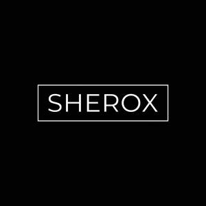

Trade Mark Journal No.2025/043 24 October 2025
UK00004276444 10 October 2025 (25,41)

- Class 25
- Clothing; Jackets [clothing]; Knitwear [clothing]; Ready-to-wear clothing; Woolen clothing; Garments for protecting clothing; Layettes [clothing]; Clothing layettes; Linen clothing; Headbands [clothing]; Headbands for clothing; Gloves [clothing]; Gloves as clothing; Clothes; Aprons [clothing]; Maternity clothing; Kerchiefs [clothing]; Jerseys [clothing]; Denims [clothing]; Shorts [clothing]; Capes (clothing); Oilskins [clothing]; Gabardines [clothing]; Leather clothing; Clothing of leather; Leather (Clothing of -); Silk clothing; Collars [clothing]; Parts of clothing, footwear and headgear; Knitted clothing; Veils [clothing]; Hoods [clothing]; Windproof clothing; Corsets [clothing, foundation garments]; Embroidered clothing; Wristbands [clothing]; Belts [clothing]; Bandeaux [clothing]; Belts for clothing; Rainproof clothing; Waterproof clothing; Casual clothing; Visors [clothing]; Jackets being sports clothing; Jackets (Stuff -) [clothing]; Stuff jackets [clothing]; Bottoms [clothing]; Playsuits [clothing]; Clothing for leisure wear; Ready-made clothing; Latex clothing; Woven clothing; Infant clothing; Trunks being clothing; Leisure clothing; Drawers [clothing]; Drawers as clothing; Clothing for sports; Sports clothing; Athletic clothing; Clothing for children; Muffs [clothing]; Bodies [clothing]; Clothing for babies; Tops [clothing]; Clothing for infants; Weatherproof clothing; Water-resistant clothing; Handwarmers [clothing]; Beach clothing; Thermal clothing; Men's clothing.
- Class 41
- Sports and fitness; Organisation of sporting competitions and sports events; Organising of sports competitions and sports events; Organising of sports events and of sports competitions; Organising of sports and sports events; Sports and fitness services; Providing facilities for sporting events, sports and athletic competitions and awards programmes; Organising of sports competitions and events; Management of events for sporting clubs; Organising of sports events; Entertainment services in the nature of sporting events; Organization of sporting events and competitions; Timing of sports events; Sports events (Timing of -); Organisation of sporting events and competitions; Services for the organisation of sports events; Conducting of sports events; Organising of sporting events, competitions and sporting tournaments; Sports activities; Providing facilities for sports events; Organising of sporting activities and of sporting competitions; Booking of sports personalities for events (services of a promoter); Handicapping services for sporting events; Entertainment services relating to sporting events; Organisation of sporting activities and competitions; Organization of sports competitions; Competitions (Organization of sports -); Organisation of sports competitions; Organization of sporting events; Conducting of live sports events; Sports training; Training in sports; Organising of sporting activities and competitions; Organising of sporting activities or competitions; Organisation of events for cultural, entertainment and sporting purposes; Organisation of sporting events; Organising community sporting events; Sporting activities; Organising of sports competitions; Competitions (Organising of sports -); Sports competitions (Organising of -); Coaching services for sporting activities; Entertainment services relating to sport; Entertainment, sporting and cultural activities; Sporting and recreational activities; Organising of sporting events; Organising sporting events; Organisation of sports tournaments; Production of sporting events; Organizing community sporting and cultural events; Provision of sporting events; Training of sports players; Sports club services; Fitness club services; Organization of electronic sports competitions; Sporting and cultural activities; Cultural and sporting activities; Educational and training services relating to sport; Entertainment provided during intervals of sporting events; Provision and management of sporting events; Providing sports facilities for speed skating championships; Organising of recreational events; Health and fitness club services; Health club [fitness] services; Education, entertainment and sport services; Entertainment services in the nature of organizing social entertainment events; Providing facilities for sports tournaments; Organisation of sports activities for summer camps; Organisation of sporting competitions; Instruction in sporting activities; Arranging of sports competitions; Organisation of entertainment events; Time recording services for sporting events; Entertainment services in the nature of competitions; Entertainment in the nature of weight lifting competitions; Entertainment in the nature of track and field competitions; Conducting of sports competitions; Entertainment services provided during intervals at sports events; Organisation of entertainment and cultural events; Health club services [health and fitness training]; Production of sporting events for radio; Arranging of sporting events; Sporting competitions (Organising of -); Organization of entertainment events; Exercise and fitness classes; Exercise [fitness] training services; Fitness and exercise training services; Sports entertainment services; Training services relating to fitness; Tournaments (Staging of sports -); Personal fitness training services; Physical fitness training services; Health and fitness training; Provision of sporting competitions; Ticket information services for sporting events; Ticket reservation and booking services for education, entertainment and sports activities and events; Rental services relating to equipment and facilities for education, entertainment, sports and culture; Education, entertainment and sports.
Sherin Roberts